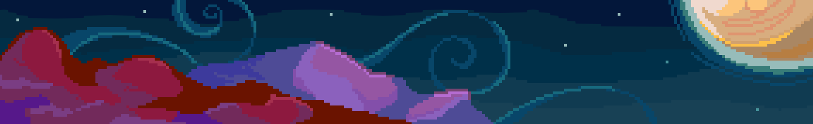

Work
Since the start of 2025, I've gotten interested in marketing using my art and technical skills. I'm looking forward to creating artwork for organizations I'm a part of to freely use to promote their brand. I'll put examples of this work on this page as my journey continues.
- During 2025, I've been part of a student-run organzation called The Forge that publishes sci-fi and fantasy magazines. The button above is a link to our official website. My favorite thing to do is creating clipart for them to use in social media posts. You can click the image below to see some examples! Other duties I have include improving the website design and collaborating with authors to bring their vision to life. The night sky banner below the buttons is a background I drew for the website, while a fellow member named Ann drew the flying dragon, hover over it for a surprise!